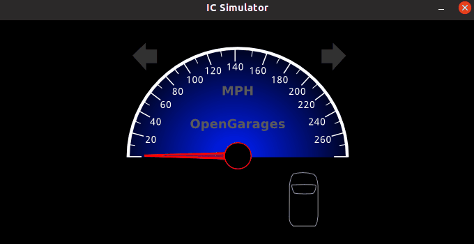
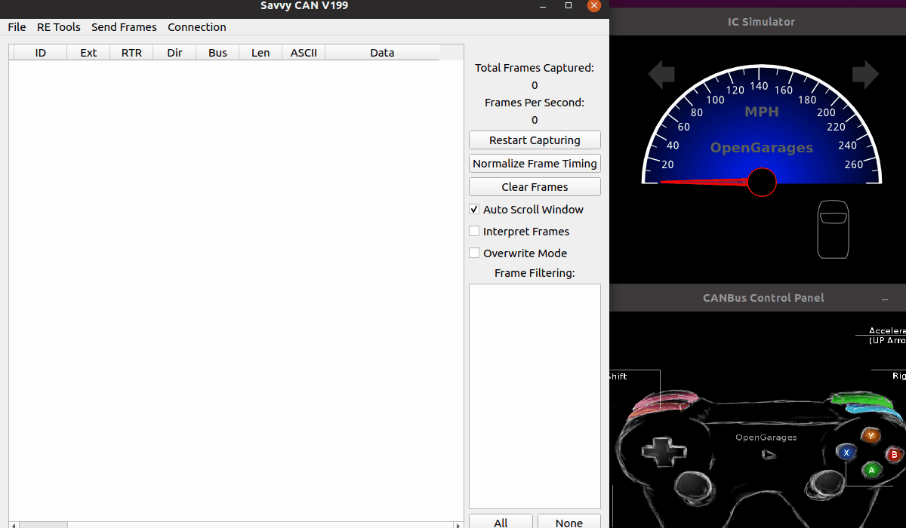
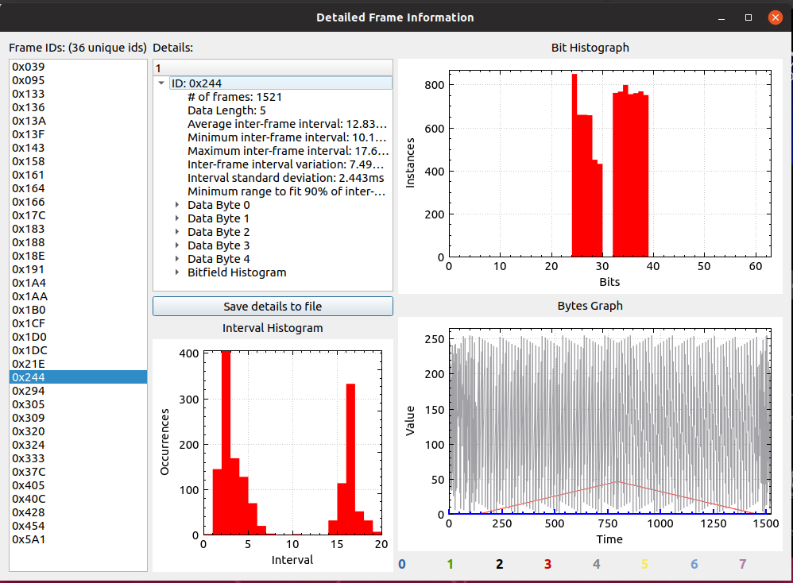
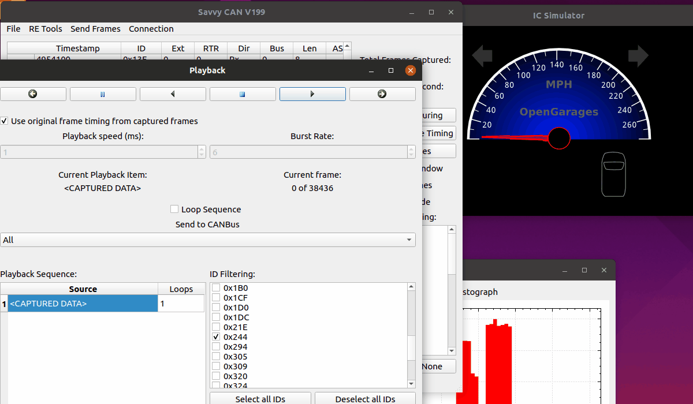
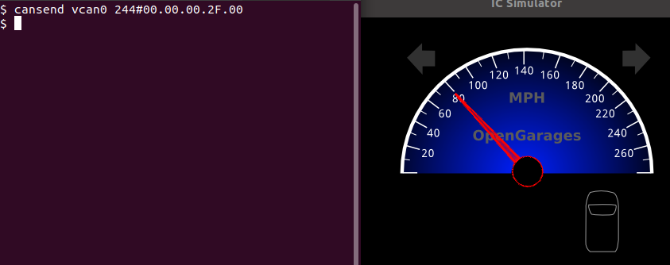
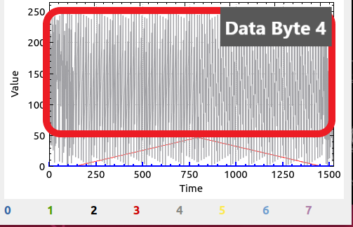
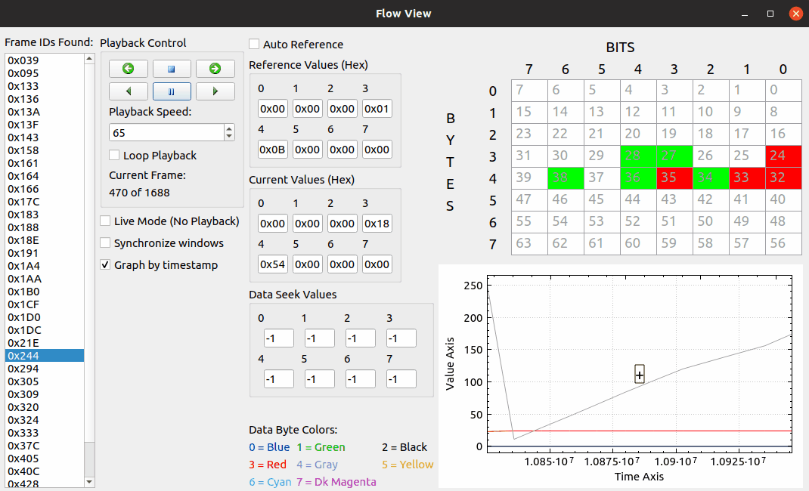
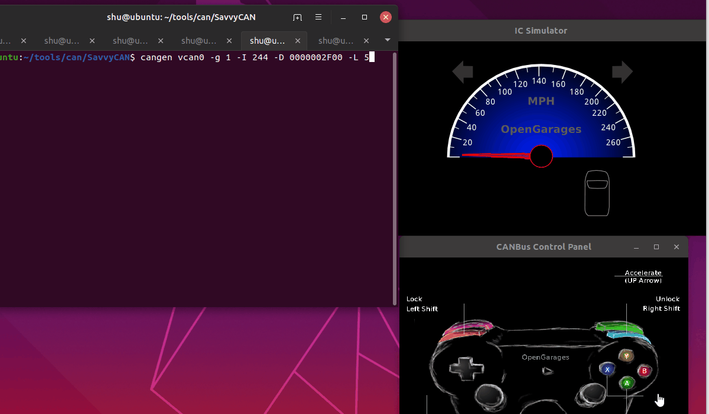

ECUの車速に関するCANメッセージを特定して騙す

CANの記事も3回目。引き続きシミュレーション環境のICSimでCAN通信の勉強。
前回はドア開錠メッセージをSavvyCANのOverwrite Modeで特定した。
しかしあの程度ならわざわざSavvyCANを使わずともcansnifferなどでも十分見つけることができる。
今回は、常に膨大なデータが流れていて普通のCUIでは見つけることが難しそうな車速に関するメッセージを、GUIモニタのSavvyCANならではの機能を使って見つけてみる。
特定したあとは、実際の速度から別の速度に詐称できないかを試す。
環境
Ubuntu 19.04 Desktop
なぜ車速？
ICSimじゃこれくらいしかネタがない 車速を出しているCAN IDを特定し偽装することで、致命的な攻撃を食らわせることができるので。
例えば電動ルーフは基本的に停車あるいは低速状態のときしか作動しないが、車速を詐称することで高速道路を運転中に突然電動ルーフを開かせることも可能になる。
その他ADAS（先進運転支援システム）のクルーズコントロールも車速を見ているので、良くないことが起こりそう。
車速に関するメッセージについて
そもそもCANバスに車速を直接示すメッセージは流れているのかという話。
少なくともICSimにはメーター計があるので、何らかの形で速度を割り出すことができているということはわかる。

↑ ICSimのcontrolsを起動するとメーター計がブルブル震え始める
インターネッツで調べたところ、現代の車ではCANバスに車速データが流れていることがわかった。
ABS(アンチロック・ブレーキシステム)のECUが以下の流れで車速データを流してくれるらしい。
-
各車輪に取り付けられたABS用の車輪速センサーがタイヤの回転数をパルス信号に変換
-
車速パルスをスキッドコントロールコンピュータ (ABSを取り持つECUの名称らしい)が受け取りABSに活かす
-
せっかく車速データを持ってるのでメーターなどのECUのためにCANバスにデジタル変換された車速データを流す
-
（メータや電動ルーフ、カーナビ、ADASはABSから受け取った車速データを使って様々な機能を実現）
車速を特定する
CANバスに車速データが流れるであろうことはわかったので、仮定をもとに特定を行う。
まず、車速の数値とデータフレームの数値が比例する場合、車速が小さい場合はデータフレームの値も小さくなるし、大きい場合はそのようになる。
つまりICSimのcontrolsにて上キーを押し車速を0mphから80mphくらいまで上げ、そのあとキーを離し0mphに戻るまでを記録することで、車速に関するCANIDのデータフレームの折れ線グラフは山なりになるはず。
関係ないが、速度表示がマイルなのアメリカ感がある
以上の仮定のもと、次の手順でCAN通信を取得する。
- SavvyCAN・ICSimを起動する
- CANモニタを開始する
- 車速を0mph → 80mph → 0mph にする
- CANモニタを停止する
- データのグラフを見る
恒例の動画。

記録後、各CAN IDごとのデータフレームのグラフを見る。
RE ToolsのFrame Data Analysisウインドウで確認することが可能。
Frame Data Analysisはデータ参照時にnull pointerアクセスでクラッシュすることがあるため、事前にFile->Save Log FileでCANデータを保存しておくことをオススメします
ウインドウにある各CAN IDをポチポチと見たところ、ID 0x244 にて非常に特徴的なグラフを見ることができた。

右下の Bytes Graphは、データフレームの各バイトがそれぞれ時間ごとにどの数値を示したかを視覚的に確認するためのグラフになっている。
その中でもData Byte 3のデータが山なりになっていることがすぐにわかる。
他のCAN IDではこのようなわかりやすい山なりはなかったので、車速に関する情報は 0x244、特に Data Bytes 3ではないかと推測できる。
試す
SavvyCANのPlayback機能を使ってリプレイ攻撃を試みる。
- ICSimのcontrolsを終了しておく
- Send Frames -> Playbackを選択し、Playbackウインドウを出す
- Load Captured Data を選択してキャプチャデータを取り込んでから、 右のID Fillteringリストから 0x244 のみを選択した状態にする
- 画面上部の右から二番目にある再生ボタンを押す
リプレイ時はキャプチャ時の間隔でCANメッセージを送信するほか、自分で間隔と送信レートを指定することも可能。
これも動画でどうぞ。

0x244をリプレイしたときにICSimのメーターが動いたため、車速データは0x244に含まれることがわかる。
車速データの値を特定
前項で車速データは0x244にあるとわかった。
もう自明だが車速を司る具体的なバイトを調べる。
0x244 は 4バイト目、5バイト目の値が変化していることがわかっている。
Data Byte 3
4バイト目である Byte3 のヒストグラムを確認する。
Data Byte 3
Changed bits: 0x3f (00111111)
Range: 0x00 to 0x2F
Histogram
0/0x0 (00000000) -> 20
1/0x1 (00000001) -> 220
2/0x2 (00000010) -> 28
(snip)
44/0x2c (00101100) -> 28
45/0x2d (00101101) -> 28
46/0x2e (00101110) -> 28
47/0x2f (00101111) -> 9
車速は 0から80 の範囲で動かしたが、データ上は0x00から0x2Fを示すことがわかる。
このことから恐らく 0x2F が 80mph付近だろうということでcansendを試す。
$ cansend vcan0 244#00.00.00.2F.00

予想通りメータは80mph付近を指した。
新しい車速データを送らない限りはICSimのメータ計はその車速を指し続ける模様。
Data Byte 4

先程のByte3は山なりになっていることから車速を示すことがすぐにわかったものの、Byte4 は 0x00 から0xFF をまんべんなく移動しているため、ぱっと見で何も示しているかがよくわからない。
そこでSavvyCANのFlow Viewウインドウを使って速度との関係性を調査する。
Flow ViewウインドウではキャプチャしたCAN通信をプレイバックでき、時間軸と各データの流れを視覚的に見られる。
またプレイバック速度も変更できるので、大量のデータでも細かいところまで見られる。
動画でどうぞ。画面中央のCurrent Valuesに注目。

Byte4が0xFFを超えて0x00に戻るとき、Byte3の値が1増加することが見て取れる。
つまり、Byte4はByte3の下位バイトであり、車速の細かい値の部分を示すことがわかる。
車速を詐称してみる
車速は CANID 0x244 の Byte3, 4で管理していることがわかったので、ここに入れたい速度に対応した値を入れることで車速を詐称することができる。
詐称には can-utils の cangen を使う。
cangenは指定した間隔で指定したデータ(あるいはランダムデータ)をCANバスに流し続けてくれる。
送信時は本来の車速データよりも頻繁にデータを送り頑張って競り勝つようにする。
$ cangen vcan0 -g 1 -I 244 -D 0000002F00 -L 5
今回は Byte3 に 0x2F を指定しているので 80mph と詐称することになる。
動画でどうぞ。

controlsの0mphの車速メッセージに対抗するように80mphが指し示されている。
しかしながら本来の車速メッセージも流れ続けているので時々0mphを指してしまうことも。
これを防ぐには、本来のメッセージを出すECUが送信待ちになるような高い頻度でメッセージを出すか、バスオフ攻撃をECUに行いメッセージを出させないようにする必要がある。
ただ前者はCANバスを専有してしまうことになるし、後者はABS ECUの場合ABS機能が停止することになり非常に危険（攻撃者にとっては一石二鳥ではあるが）。
まとめ
SavvyCANの様々な機能を使うことで車速に関するメッセージの特定ができた。
また、cangenを使って本来の車速メッセージに被せて詐称することもできた。（できたのか？）
参考情報にSANSのカーハッキングに関するホワイトペーパーがあるが、そこに今回と同じようにメータを詐称している動画が貼られていた。
この動画は今回の実験とは違い、本来の車速である0mphになることがなく非常にスムーズに車速を詐称できている。
どうやってるんだろう・・・。
（イグニッション電源が入ってなく本来の車速メッセージが流れていない可能性はある）
シミュレーション環境(ICSim)でできることは一通りやった気がする。
参考
- ブリブリ鳴るのは故障じゃなくて、ABSのカラクリ
https://monoist.atmarkit.co.jp/mn/articles/1007/29/news102.html - スピードメーターを動かすのはABS システム
http://www.jaspa-oita.or.jp/jissen/2016/09/page1_1.html - Hacking the CAN Bus: Basic Manipulation of a Modern Automobile Through CAN Bus Reverse Engineering
https://www.sans.org/reading-room/whitepapers/awareness/paper/37825